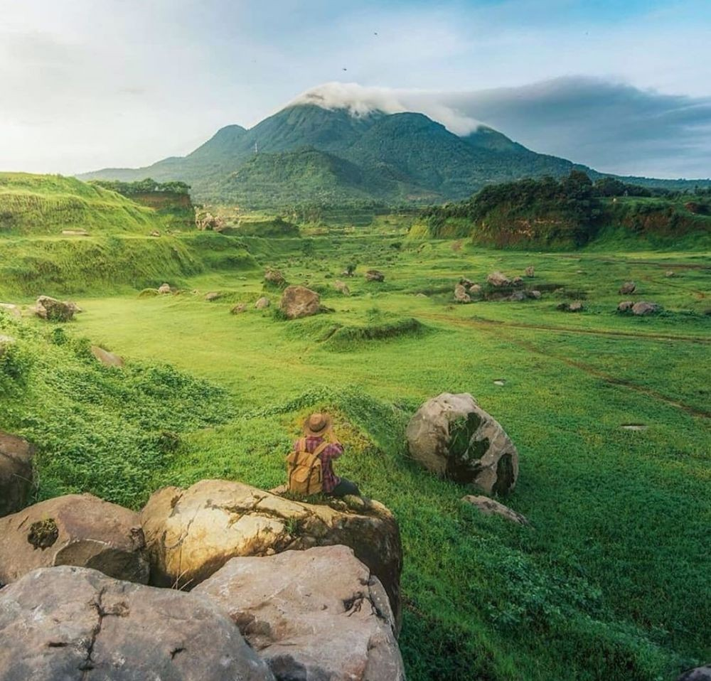
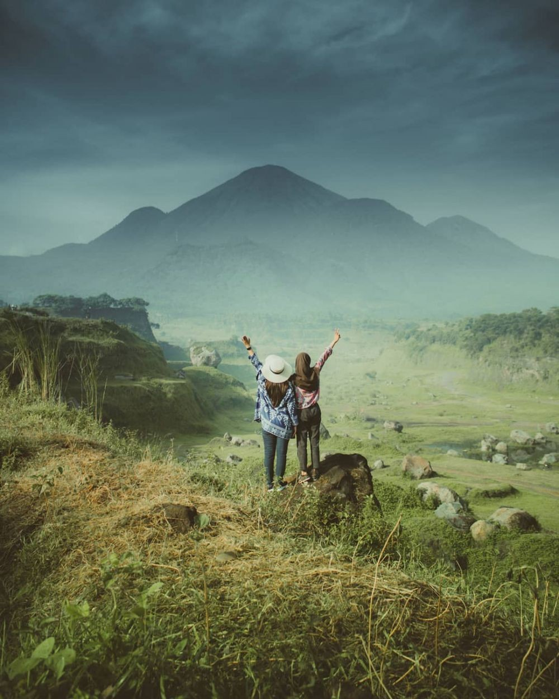

 |
Desa Manduro Manggung Gajah,Kecamatan Ngoro, Kabupaten Mojokerto Jawa Timur | Ranu Manduro padang rumput dengan luas puluhan hektar, viral di media sosial, beberapa pekan terakhir. Pemandangan indah dengan background gunung penanggungan, menjadikan padang rumput yang dihiasi batu pada puluhan titik ini menarik ribuan orang untuk mendatangi lokasi itu. Kita dapat menikmati pemandangan indah tersebut dengan berjalan-jalan di padang rumput tersebut. Dan yang paling penting kita tidak perlu mengeluarkan uang untuk menikmati pemandangan indah ini. |
|---|

|
Desa Sidomulyo, Kecamatan Pronojiwo, Kabupaten Lumajang, Provinsi Jawa Timur | Air Terjun Tumpak Sewu atau disebut juga Coban Sewu adalah sebuah air terjun berketinggian sekira 120 meter. Air Terjun Tumpak Sewu merupakan air terjun terindah di Pulau Jawa dan Indonesia. Air Terjun Tumpak Sewu memiliki formasi unik karena memiliki aliran air yang melebar seperti tirai sehingga termasuk dalam tipe air terjun Tiered. Lokasi Air Terjun Tumpak Sewu ada di dalam sebuah lembah curam memanjang dengan elevasi 500 meter di atas permukaan air laut. Air Terjun Tumpak Sewu terbentuk di aliran Sungai Glidih yang berhulu di Gunung Semeru. |
|---|

|
Taman Nasional Komodo, Kabupaten Manggarai Barat, Nusa Tenggara Timur | Pulau Padar adalah pulau ketiga terbesar di kawasan Taman Nasional Komodo. Mungkin keberadaan Pulau Padar tidak se-terkenal Pulau Komodo ataupun Pulau Rinca, namun keindahan Pulau Padar tidak kalah cantiknya dengan kedua pulau tersebut. Pulau Padar juga diterima sebagai Situs Warisan Dunia UNESCO, karena berada dalam wilayah Taman Nasional Komodo, bersama dengan Pulau Komodo, Pulau Rinca dan Gili Motang. Meskipun berada di dalam kawasan Taman Nasional Komodo, namun Pulau Padar tidak dihuni oleh komodo dikarenakan rantai makanan yang terputus. Di sekitar pulau ini terdapat pula tiga atau empat pulau kecil yang memiliki keunikan panorama masing-masing. Dan di Pulau Padar juga terdapat hamparan pink beach yang sangat cocok digunakan untuk sekedar berenang, bermain air ataupun ber-snorkeling ria. Pengunjung juga dapat menaiki bukit yang berada di Pulau Padar untuk menikmati keindahan panorama dari atas. Biru laut dan jajaran pulau di sekitarnya akan menghipnotis pengunjung. |
|---|